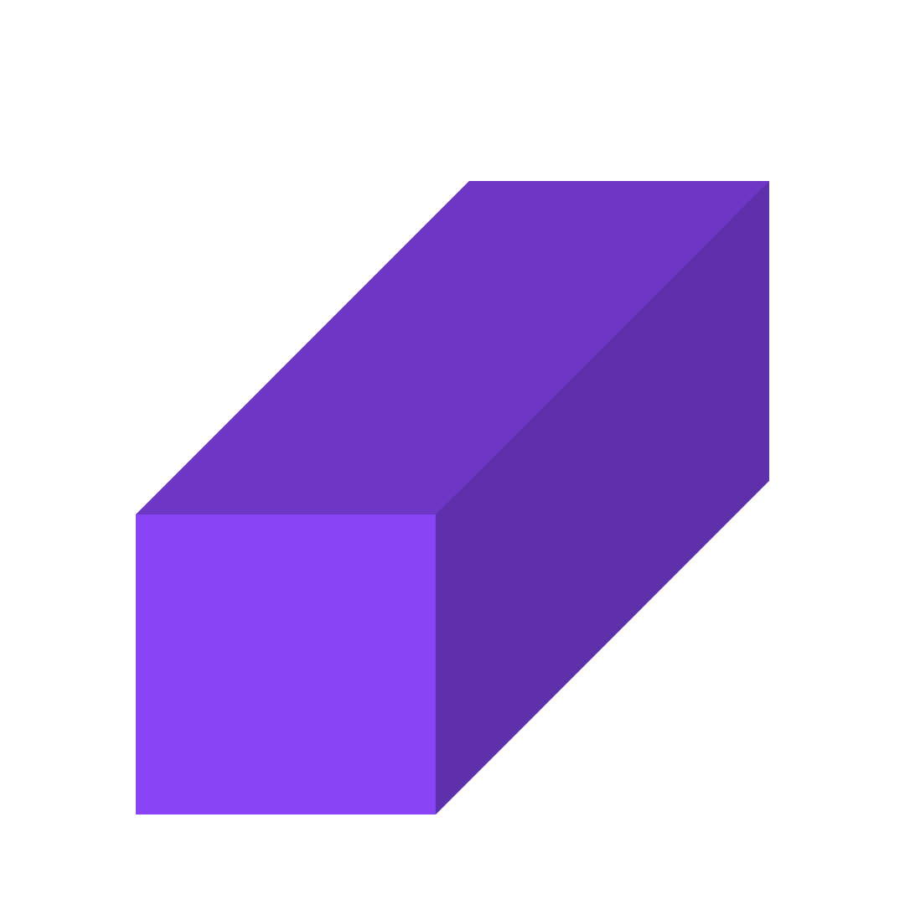

Cubóide
Um cubóide é uma figura geométrica tridimensional com seis faces retangulares. Ele tem 8 vértices e 12 arestas. As faces opostas de um cuboide são paralelas e congruentes. Um exemplo comum de um cuboide é uma caixa retangular, como uma caixa de sapatos. O cubóide é uma forma muito comum em nossa vida cotidiana, encontrada em embalagens, prédios e muitos outros objetos.
Sua história
Desde a arquitetura egípcia até os modernos arranha-céus, o cuboide desempenha um papel crucial na construção de edifícios e estruturas retangulares. Sua forma retangular permite um empacotamento eficiente em embalagens, otimizando o espaço de armazenamento e transporte, especialmente relevante em indústrias como logística e comércio eletrônico.
Na matemática, as propriedades do cuboide, como volume e área superficial, são frequentemente exploradas em problemas geométricos e de engenharia. Além disso, sua diversidade de aplicações se estende ao design de móveis, fabricação de peças industriais e até mesmo na modelagem de dados em ciência da computação.